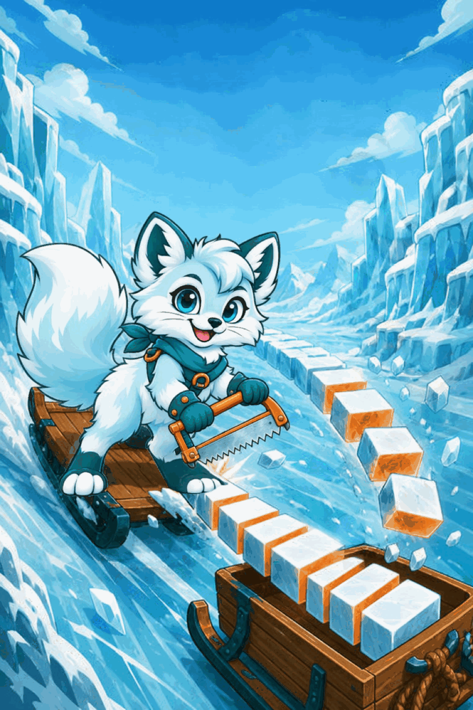

단계
1
점수
0
콤보
×1
♥♥♥
🔊
여우의 부탁
구리 자
남은 띠
자른 도막
0
도막
두 얼음 붙이기
한 칸 눈금은 모두 같은 길이예요
띠를 다 잘랐어요!
몫 (자가 들어간 횟수)
다음 띠로!
주문 관문
여우의 주문
온전한 도막이 이만큼 나오게 자를 고르세요
협곡 다리 완성!
점수
0
한 판 최다 도막
0
다시 자르기!
타이틀로
1 / 3
쉬움
목숨 없음 · 자석 강함
어려움
목숨 3 · 자석 약함
다음

🔊
쩍
쩍
나눴는데 더 많아
6학년 2학기 · 분수의 나눗셈
얼음 자르기!
어떻게 놀아요? 〉